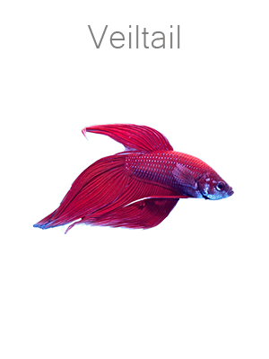
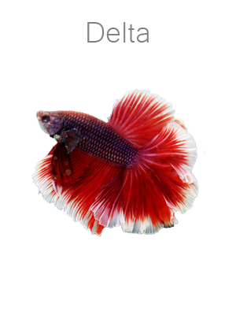
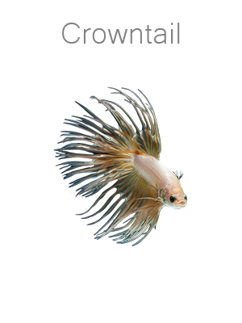
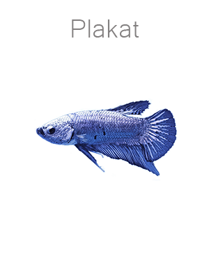
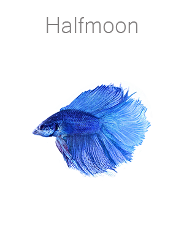

TYPES






The Siamese fighting fish (Betta splendens), also sometimes colloquially known as the Betta, is aspecies in the Gourami family which is popular as an aquarium fish.
They are called “pla-kad” (biting fish) in Thai or “trey krem” in Khmer. They are a very territorial fish and it is unwise to house two males together. Even the females may become territorial towards each other if not housed in a large enough tank.
These species are native to the Mekong basin of Laos, Cambodia, Vietnam and Thailand. The fish can be found in vast standing waters of canals,rice paddies and floodplains.
To keep a Betta healthy, remember to provide him with plenty of clean, warm water. Your Betta's temperature should never drop below 74° Fahrenheit (about 23.5° Celsius), and ideally should remain between 78° and 80° F (25.5° and 26.5 C), so you will need a heater and a thermometer. Keeping a Betta below Betta Drawing 74° for long periods of time, or allowing their temperature to drop below 69° (about 20.5° C) at all can seriously hamper their immune system, making them susceptible to many diseases, particularly the often fatal 'Fur Coat Syndrome' bacteria.
Keep your Betta in a tank of at least 10 gallons (about 38 liters), and make sure that a minimum of 5 gallons (19 liters) of your tank space is dedicated to the Betta Drawing Betta. This will provide sufficient space for your Betta and will allow the tank to help you keep healthy fish.Perform your weekly 10-15% water changes, so that your Betta always has clean water and the waste that is not processed by the filter is removed.
Your Betta will need a filter to keep the water from becoming toxic, and you will need to keep the filter in good condition. When selecting a filter for your Betta, make sure that the filter will not produce excessive current in your tank, and this will make it difficult for the Betta to swim. What this primarily means is that you should not select a filter that is significantly overrated for your fish tank, not that you need to look for a special filter with a low flow rate. However, this is another reason not to try to keep a Betta in a small tank, since filters for small tanks and bowls generate too much current for many fish, particularly calm water fish like Bettas.
Remember that your Betta is a carnivore (meat eater), so provide him Anabontoid Mosaic with a varied and high protein diet. Many Betta foods are available on the market today, and most frozen or processed tropical fish foods are also appropriate. Bettas have small appetites, so don't overfeed them. Your fish should be able to consume all the food within two minutes of feeding.
If there is food in the tank after this time has elapsed, this will contribute to poor water quality and make your Betta more susceptible to disease. You will probably only need to feed your Betta once a day, though some people feed twice a day. If you feed twice a day, remember that this will increase the waste your fish is producing and will also increase the risk of over feeding, so it becomes more important that you are performing your weekly 10-15% water changes and all necessary filter maintenance. Providing a proper diet will increase your Betta's life expectancy and bolster his immune system.